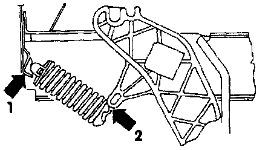

Installation
Install the clutch over-center spring in reverse order of removal, and note the following:1. When installing the over-center spring, locate the relay plate in its left mounting.
2. Pull the clutch pedal into the passenger compartment.
Clutch Over-Center Spring:

3. Guide the over-center spring between the clutch pedal and mounting/relay plate holder until it is in position in the mounting bracket (arrow 1) and located directly below clutch pedal mounting lug (arrow 2).
4. Press the over-center spring onto the mounting lug on pedal support, depressing the clutch pedal slightly if necessary.